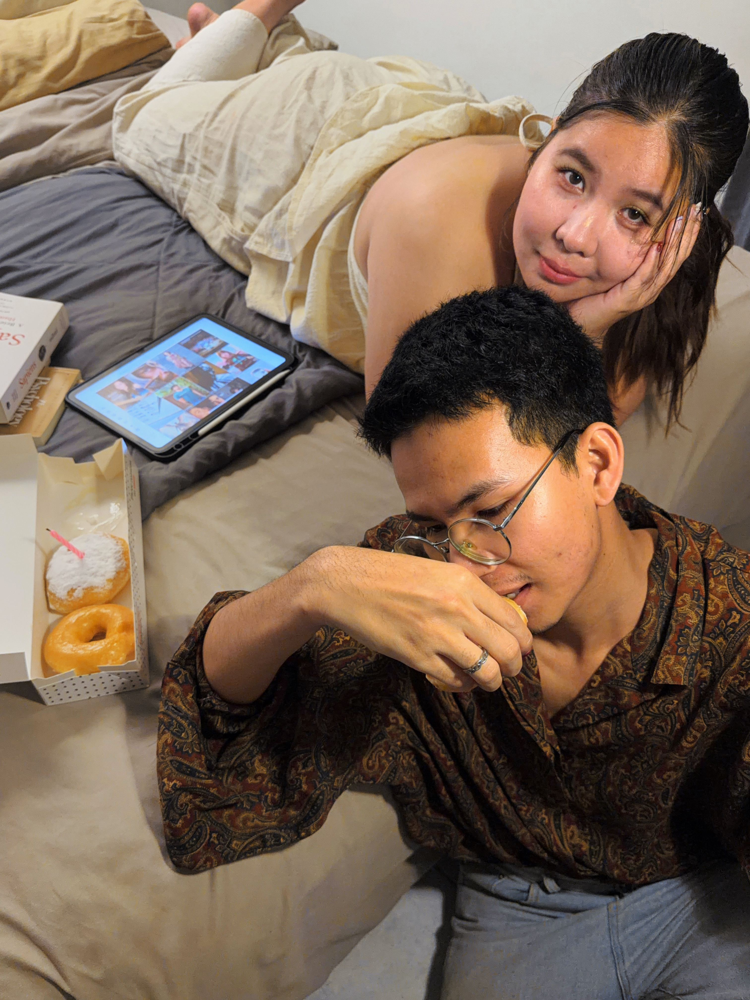

01 / THE LITTLE CHAPTERS
ค่อย ๆ ย้อนกลับไปด้วยกัน
ความทรงจำที่ทักเล่าไว้
เก็บความหมายไว้เหมือนเดิม
06.09.2024เริ่มคบกันไก่ต้มน้ำปลาที่อัยย์ทำให้กิน
06.09.2025ครบรอบ 1 ปีมื้อที่ร้านเย็นตาโฟ โต้รุ่ง
06.09.2026ครบรอบ 2 ปีรูปของเราวันนี้
06.09.2024 — 06.09.2026 · VOL. 02
ทริปที่ออกไปด้วยกัน มื้ออร่อยที่จำได้
และวันธรรมดาที่มีรูปของเรา

01 / THE LITTLE CHAPTERS
ความทรงจำที่ทักเล่าไว้
เก็บความหมายไว้เหมือนเดิม
02 / SAVED WITH A SMILE
03 / JUST ONE MORE GAME
ลองขยับเมาส์ แล้วลูบหัวแมวที่มุมจอ
เก็บหัวใจให้ครบ 5 ดวง เพื่อเปิดห้องแมวดำ